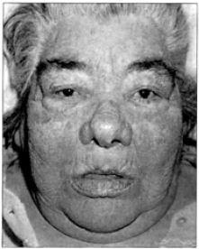

Questão 1 · Apresentação clínica · 4000129358Em relação ao hipotireoidismo primário, é INCORRETO afirmar que:
A A média de idade ao diagnóstico de Hipotireoidismo é de 40 anos.
B Em mulheres, a menorragia é mais frequente que a oligomenorreia.
C O aumento de peso é discreto e é consequência do acúmulo de líquidos no tecido mixedematoso.
D Cansaço, dificuldade de concentração e de memória são fatores de confusão entre Hipotireoidismo e Depressão.
Questão 2 · Diagnóstico e investigação adicional · Tratamento · 4000127749Em uma consulta ambulatorial de pós-internação você atende uma paciente de 76 anos, 65 kg, que recebeu alta há sete dias do Hospital após período prolongado para tratamento de uma pneumonia nosocomial. Ela tem como antecedentes: hipertensão arterial, dislipidemia, miocardiopatia isquêmica e hipotireoidismo. Está em uso de atorvastatina 80 mg a noite, acido acetilsalicílico 100 mg após almoço, enalapril 10 mg 12/12 horas, carvedilol 6,25 mg 12/12 horas e levotiroxina sódica 50 mcg em jejum. Traz exames laboratoriais colhidos no dia anterior à consulta: TSH 10,56 mU/L (VR 0,5 – 4,5 um/L) e T4 livre 0,96 ng/dL (VR 0,7 – 1,8 ng/dL). Sua conduta correta neste momento será:
A Aumentar a dose de levotiroxina em 12,5 mcg.
B Reduzir a dose de levotiroxina em 12,5 mcg.
C Aumentar a dose de levotiroxina em 25 mcg.
D Manter a dose de levotiroxina.
Questão 3 · Hipotireoidismo na gestação · 4000125746Paciente hipotireoidea em uso de levotiroxina o procura por ter sido diagnosticada gestação de quatro semanas. Qual é a sua conduta imediata?
A Solicitar TSH e T4Livre.
B Aumentar a dose de levotiroxina em 30%.
C Reduzir a dose de levotiroxina em 30%.
D Suspender o tratamento até o parto.
E Solicitar TSH, T4L, antiTPO e antitireoglobulina.
Questão 4 · Tratamento do hipotireoidismo subclínico · 4000124093Assinale a alternativa que apresenta paciente com indicação de tratamento com levotiroxina, cujos exames laboratoriais foram todos confirmados num intervalo de três meses e se mantiveram com o mesmo padrão, tendo em vista as seguintes observações: ATPO = anticorpo antitireoperoxidase; valor de referência do TSH = 0,4-4,0mUI/mL e do T4 livre = 0,8- 1,8ng/dL.
A Idade = 34 anos com queixa de amenorreia, TSH = 1,4; T4 livre = 1,2 e ATPO positivo
B Idade = 51 anos, com queixa de pele seca, TSH = 5,5; T4 livre = 1,0 e ATPO negativo
C Idade = 87 anos, com queixa de cansaço, TSH = 6,5; T4 livre = 1,2
D Idade = 53 anos, com queixa de queda de cabelos e bócio, TSH = 2,3; T4 livre = 1,0 e ATPO positivo
E Idade = 27 anos, em tratamento de infertilidade, TSH= 5,3; T4 livre= 1,1 e ATPO positivo
Questão 5 · Diagnóstico e investigação adicional · Hipotireoidismo na gestação · Hipotireoidismo · 4000117729Sobre o hipotireoidismo, assinale a opção correta:
A Pode estar relacionado aos seguintes anticorpos: anti-TPO, anti-GAD e antitireoglobulina.
B Ganho de peso importante é o principal achado no exame físico.
C Para melhor condução do caso, ultrassonografias de tireoide semestrais são usualmente indicadas.
D TSH, T4 e T3 totais, além de T3 reverso, devem ser solicitados de rotina para avaliar a eficácia do tratamento.
E Valores de TSH para alvo do tratamento farmacológico variam com idade e gestação.
Questão 6 · Tratamento do hipotireoidismo clínico · 4000117501Mulher de 45 anos, comparece ao ambulatório para mostrar exames de rotina. Encontra-se assintomática, praticando atividade física regularmente e seguindo rigorosamente as orientações dietéticas prescritas pela nutricionista. Apresenta os seguintes exames: Colesterol Total=286 mg/dl; HDL=48 mg/dl; LDL=190 mg/dl, Tg=240 mg/dl; TSH=23 um/L (VR=0,4- 4,5); T4 Livre=0,6 pg/ml (VR=0,7-1,8). O tratamento neste momento é:
A Levotiroxina e fibrato.
B Levotiroxina.
C Levotiroxina e estatina.
D Levotiroxina, estatina e fibrato.
E Estatina.
Questão 7 · Tratamento do hipotireoidismo subclínico · 4000114019Paciente do sexo feminino, 36 anos, fora de gestação, queixa-se de constipação, intolerância ao frio, secura na pele e fadiga, diminuição da memória e alteração do raciocínio. Trouxe exames séricos mostrando T4 livre = 1,3 (VR: 0,93 -1,7); TSH = 5,8 (VR: 0,27 – 4,2) e Ac Anti TPO e Ac Anti Tireoglobulina positivos. Não havia uso de medicamentos ou vitaminas. Sem quadro de dor na parte anterior do pescoço, precedendo a coleta dos exames. Mãe apresenta hipotireidismo por Tireodite de Hashimoto. Os exames foram repetidos sem medicação 6 meses depois: T4livre = 1,4 (VR: 0,93 -1,7); TSH = 8,8 (VR: 0,27 – 4,2) e Ac Anti TPO e Anti Tireoglobulina positivos. É CORRETO afirmar que: VR = Valor de Referência
A Deve ser considerada a reposição de hormônio tireoidiano, pois a paciente apresenta níveis progressivamente elevados de TSH, na presença de anticorpos anti-tireoidianos.
B Apenas com o US de tireoide, mostrando alterações compatíveis com Tireoidite deHashimoto, é que podemos iniciar terapia de reposição com hormônio tireoidiano.
C Deveríamos iniciar a terapia apenas se a paciente mostrasse TSH ≥ 10mUI/L persistentemente e desejo de gestação.
D Com certeza, os sintomas apresentados nada têm a ver com o fato de apresentar alterações nos níveis de TSH, que nunca são sintomáticos com a normalidade dos hormônios tireodianos.
Questão 8 · Tratamento · 4000083459Sobre o tratamento do hipotireoidismo, assinale a alternativa correta.
A O uso de levotiroxina em pacientes acima de 65 anos provou ser capaz de diminuireventos cardiovasculares.
B A biodisponibilidade da levotiroxina não é afetada pela ingestão concomitante dealimentos.
C Pacientes com hipotireoidismo e doença coronariana devem receber inicialmentedoses menores de levotiroxina.
D O diagnóstico de hipotireoidismo central é definido por valores altos de tsh e baixosde t4 livre.
Questão 9 · Apresentação clínica · Etiologia · 4000067951Sobre o Hipotireoidismo, é correto afirmar que:
A o Hipotireoidismo autoimune nunca está associado ao bócio.
B a deficiência de iodo continua sendo uma causa comum de Hipotireoidismo no mundo inteiro. Nas áreas com suficiência de iodo, a doença autoimune (Tireoidite de Hashimoto) e as causas iatrogênicas (tratamento do Hipertireoidismo) são mais comuns.
C distúrbios infiltrativos: amiloidose, sarcoidose, hemocromatose, esclerodermia e cistinose não podem ser considerados causas de Hipotireoidismo.
D são considerados sintomas: palpitações, perda de peso com apetite aumentado, intolerância ao calor e transpiração.
E a síndrome do túnel do carpo e outras síndromes de encarceramento são comuns no Hipertireoidismo, mas não no Hipotireoidismo.
Questão 10 · Etiologia · 4000066314Mulher com 37 anos, apresentando irregularidade menstrual, alopécia com e úvio anágeno e transtorno do humor. Exames laboratoriais evidenciam TSH = 12 mU/L e T4 livre = 0,2 ng/dL. Qual o diagnóstico mais provável?
A Tireoidite de Hashimoto
B Carcinoma papilífero da tireoide
C Doença de Graves
D Esclerodermia
E Prolactinoma
Questão 11 · Apresentação clínica · 4000066175Assinale algumas características clássicas de hipotireoidismo:
A Cãibras, fasciculações musculares, confusão mental, prolongamento de QT
B Hipertensão com encefalopatia, hemorragia digestiva alta, hipoalbuminemia, hepatite fulminante
C Náuseas, vômitos, hipotensão, hiponatremia, hipoglicemia
D Perda de peso, taquicardia, tremores de extremidades, exoftalmia, bócio
E Discreto ganho de peso, sonolência, queda de cabelo, aumento da pressão diastólica, bradicardia
Questão 12 · Diagnóstico e investigação adicional · Hipotireoidismo · Síndrome de Down · 4000009686Durante o atendimento de um paciente com Síndrome de Down e obesidade, observa-se um resultado de TSH de 6,5. Ele já apresentou, em outros momentos da vida, elevação do TSH, com normalização dos resultados em exames subsequentes e sempre com dosagem de T4 livre normal. Qual é a MELHOR conduta em relação à avaliação tireoidiana desse paciente?
A Encaminhar ao endocrinologista.
B Nova dosagem de TSH, T4 livre e pesquisa do anticorpo Antitireoperoxidase (ATPO).
C Iniciar levotiroxina.
D Parar de dosar o TSH desse paciente, já que se encontra repetidamente elevado sem impacto clínico e com dosagem do T4 normal.
Questão 13 · Diagnóstico e investigação adicional · Apresentação clínica · 4000002443Paciente feminina com 65 anos apresenta fadiga, intolerância ao frio, ganho de peso, depressão, menorragia, rouquidão, pele seca e áspera, bradicardia e reflexos tendinosos profundos lentos. Assinale as mais prováveis alterações laboratoriais encontradas:
A TSH diminuído e T4 elevado
B TSH aumentado e T4 diminuído
C TSH normal e T4 aumentado
D TSH diminuído e T4 diminuído
Questão 14 · Apresentação clínica · 4000117694Tipicamente nos quadros de coma mixedematoso, encontramos
A Hipernatremia
B Hipertemia
C Taquicardia
D Hipocapnia
E Hipocortisolismo
Questão 15 · Diagnóstico e investigação adicional · 4000115590Mulher, 25 anos, faz por conta própria vários exames laboratoriais e procura atendimento médico por apresentar TSH =0,01 μ UI/ml (VR: 0.4 – 4,8). Os demais exames são normais, usa apenas ACO. O exame físico é normal, tireoide palpável, tamanho e consistência normais. O que seria mais adequado para iniciar a investigação diagnóstica?
A T₄ livre, anticorpos antitireoide.
B T₄ livre, ultrassonografia de tireoide e TRab.
C T₄ livre, RNM de sela túrcica.
D T₃ T₄ livre, TSH, captação de ¹³¹I.
Questão 16 · Tratamento do hipotireoidismo subclínico · 4000108942Uma professora de 52 anos comparece a um retorno para checar exames solicitados pela médica da Unidade Básica de Saúde de seu bairro. Tanto na consulta, quando foram solicitados os exames, quanto no retorno para sua verificação, não apresentava qualquer queixa. É portadora de hipertensão arterial sistêmica tratada com dieta e 75 mg/dia de captopril. Na consulta de retorno, a senhora encontrava-se pesando 75 kg, com índice de massa corporal de 26 kg/m². Sua pressão arterial estava 144 x 92 mmHg. Resultados dos exames solicitados: TSH de 9,0 mU/L (valor normal 0,4 a 4,5 mU/L), T4 livre de 1,2 ng/dL (valor normal 0,7-1,8 ng/dL); demais exames solicitados sem alterações. Além de intensi car medidas não farmacológicas para controle de hipertensão arterial sistêmica, qual seria a alternativa mais adequada para o manejo desse quadro?
A Introduzir 25 mcg/dia de levotiroxina.
B Introduzir 75 mcg/dia de levotiroxina.
C Introduzir 50 mcg/dia de levotiroxina.
D Não introduzir levotiroxina.
Questão 17 · Apresentação clínica · Etiologia · Síndrome de Down · 4000100908Uma menina de seis anos de idade, portadora de trissomia do cromossomo 21, sem cardiopatia congênita, apresenta astenia com desaceleração de velocidade de crescimento e ganho de peso normal para a idade, observado após 4 meses da última consulta de rotina, em curva especi ca para a síndrome. Neste caso, a principal hipótese diagnóstica a ser afastada, das relacionadas abaixo, será:
A Síndrome de Turner
B Tireoidite linfocitica
C Deficiência de 25-OH vitamina D
D Diabetes melitos tipo 1
Revisar: possível letra faltando em enunciado
Questão 18 · Etiologia · 4000069300São causas de hipotireoidismo primário:
A Amiloidose, Doença de Graves, Tireoidite actinica.
B Tireoidite de Riedel, adenoma toxico, hipopituitarismo.
C Tireoidite de Hashimoto; deficiência de iodo; hemocromatose.
D Síndrome de Sheehan, sarcoidose, adenoma hipofisário.
Questão 19 · Tratamento do hipotireoidismo subclínico · Hipotireoidismo na gestação · 4000067757Paciente, 30 anos, assintomática e previamente hígida, apresenta TSH 7,8 mUI/L e T4 livre normal. Dentre as alternativas a seguir, aquela que indica o início de reposição de levotiroxina é:
A gestação.
B IMC 30 kg/m².
C hemoglobina 12 g/dl.
D perfil lipídico com LDL = 130 mg/dl, HDL = 30 mg/dl e triglicerídeos = 100 mg/dl.
E sódio = 133 mEq/L.
Questão 20 · Apresentação clínica · 4000054533Marque a alternativa correta sobre o coma mixedematoso:
A A bradicardia é incomum
B Geralmente não se encontra distensão abdominal e constipação.
C Depressão não faz parte dos sintomas.
D Um fator precipitante é quase sempre identificado e é mais comum que seja um evento infeccioso.
Questão 21 · Etiologia · 4000048164É causa de HIPOTIREOIDISMO SECUNDÁRIO:
A Síndrome de Sheehan.
B Utilização de lítio.
C Pós tireoidectomia para doença de Graves.
D Deficiência de iodo.
E Sarcoidose.
Questão 22 · Tratamento · 4000032962Após o início do tratamento farmacológico para o hipotireoidismo, o controle clínico deve ser realizado a cada:
A 2-3 semanas.
B 4-6 semanas.
C 8-10 semanas.
D 12-15 semanas.
Questão 23 · Diagnóstico e investigação adicional · Tratamento · Etiologia · 4000027060Marque a alternativa correta:
A No hipotireoidismo primário, o laboratório mostra redução dos níveis de TSH (hormônio tireoestimulante) e redução dos níveis de T4 livre.
B A doença autoimune da tireoide é a principal causa de hipotireoidismo primário.
C O tratamento do hipotireoidismo primário é feito sempre com o uso combinado de levotiroxina e T3.
D O hipotireoidismo subclínico é encontrado quando se tem aumento dos níveis de TSH (hormônio tireoestimulante) e redução dos níveis séricos de T4 livre.
Questão 24 · Tratamento · 4000023011Sobre as substâncias que interferem na absorção da levotiroxina no tratamento do hipotireoidismo, julgue os itens a seguir. I. Carbonato de cálcio. II. Hidróxido de alumínio. III. Omeprazol. IV. Sulfato ferroso. Pode-se afirmar que:
A apenas I e II estão certos.
B apenas I e III estão certos.
C apenas II, III e IV estão certos.
D apenas I, III e IV estão certos.
E todos estão certos.
Questão 25 · Tratamento · 4000015862Em relação ao tratamento do hipotireoidismo, assinale a alternativa CORRETA:
A A reposição da levotiroxina melhora a maioria das manifestações clínicas, exceto a disfunção cognitiva e os transtornos do humor.
B Na tireoidite de Hashimoto, está indicado o uso de corticoide para impedir a progressão da destruição autoimune da glândula.
C A dose de levotiroxina deve ser ajustada de acordo com o valor do TSH após 2 semanas do início.
D Nos pacientes idosos e cardiopatas, é recomendado iniciar doses baixas de levotiroxina e progredir lentamente
Questão 26 · Tratamento do hipotireoidismo clínico · 4000005019Paciente de 28 anos de idade em acompanhamento por hipotiroidismo por tiroidite de Hashimoto, vem em consulta para reavaliação clínica. Refere sonolência diurna e piora do hábito intestinal, com tendência a constipação. Faz uso diário de levotiroxina 125 mcg, omeprazol 20 mg e carbonato de cálcio 500 mg pela manhã. Exame físico: peso 55 kg, PA = 120 x 80 mmHg, FC = 62 bpm, tiroide com volume diminuído, sem outras alterações. Os exames laboratoriais mostram: TSH = 18,0 mUI/L (referência: 0,45-4,5) e T4 livre = 0,5 ng/dl (referência: 0,6-1,5). É correto afirmar que:
A A paciente está em hipotiroidismo subclínico, o que não justifica os sintomas. Outras causas devem ser investigadas.
B É necessário verificar se a administração da levotiroxina está sendo feita da forma preconizada.
C Os sintomas podem ser pelo hipotiroidismo, pois a paciente recebe dose insuficiente de levotiroxina para o seu peso, devendo-se aumentar a dose.
D Os sintomas podem ser pelo hipotiroidismo, devendo ser associada reposição de T3, pois é possível que a paciente apresente defeito na desiodase responsável pela conversão de T4 em T3.
E Suspeita-se de resistência ao hormônio tiroidiano e, se confirmada, deve ser feita a investigação dos familiares também.
Questão 27 · Diagnóstico e investigação adicional · Apresentação clínica · 4000003536Mulher, 42 anos, apresenta-se à consulta ambulatorial para avaliação anual. Ao exame, você observa bócio difuso (++/4) e tireóide com consistência elástica, sem sinais ogísticos. A paciente nega queixas. O exame laboratorial revela T4 livre normal e TSH discretamente elevado. Qual a hipótese diagnóstica mais provável?
A Deficiência de iodo
B Câncer de tireóide
C Tireoidite de Hashimoto
D Doença de Graves
E Bócio Multinodular
Questão 28 · Tratamento do hipotireoidismo subclínico · 4000126027Uma paciente de 29 anos de idade, assintomática, apresenta os seguintes resultados relativos a exames complementares: TSH = 8,2 mUl/ml (VR = 0,3-5,0); T4L = 1,2 ng/dl (VR = 0,7-1,8); anticorpos antitireoidianos positivos; ultrassonogra a de tireoide com discreto bócio difuso, com textura heterogênea do parênquima. Com base nessas informações relativas ao caso clínico descrito, assinale a alternativa ERRADA:
A A indicação de terapêutica de reposição com hormônios tireoidianos para essa paciente é controversa.
B Trata-se de tireoidite de Hashimoto.
C Esta paciente não apresenta disfunção tireoidiana, já que as concentrações séricas de T4L estão normais.
D Confirmada gestação nessa paciente, deve-se iniciar reposição com hormônio tireoidiano.
E A dosagem dos anticorpos antitireoperoxidase e antitireoglobulina foi importante para o esclarecimento etiológico.
Questão 29 · Hipotireoidismo na gestação · 4000122948Paciente de 28 anos, primigesta de 6 semanas, hipotireoidea em uso de levotiroxina 37,5 mcg/dia, apresenta os seguintes exames: TSH = 9 mU/L (VR = 0,4 - 4,0) e T4 livre = 1,0 ng/dL (VR = 0,8-1,4). Qual é a conduta para esse caso?
A Aguardaria e repetiria novo TSH em 3 a 6 meses.
B Iniciaria betabloqueador.
C Manteria a dose de levotiroxina e orientaria uso correto da medicação.
D Aumentaria a dose de levotiroxina em 20%.
E Aumentaria a dose de levotiroxina para 30-50%.
Questão 30 · Etiologia · 4000110303No uso medicamentoso do lítio (p.ex, no transtorno afetivo bipolar) pode ocorrer
A doença de Addison.
B hipotireoidismo.
C vitiligo.
D doença de Cushing.
E furunculose.
Questão 31 · Etiologia · 4000100980O hipotireoidismo central (HC) pode resultar de processo que comprometa a capacidade secretória da hipó se anterior e/ou do hipotálamo. Assinale a alternativa CORRETA em relação às causas de HC.
A Por definição, o HC se origina apenas da destruição de causa traumática da hipófise anterior e/ou do hipotálamo.
B Em adultos, a maioria dos casos é devida a mutações no gene do receptor do hormônio liberador de tireotrofina (TRH).
C Na presença de deficiência do hormônio estimulador da tireoide (TSH), não são observadas deficiências de outras trofinas hipofisárias, tais como de hormônio do crescimento (GH), por exemplo.
D Dopamina e dobutamina podem suprimir a secreção de hormônio estimulador da tireoide (TSH).
Questão 32 · Diagnóstico e investigação adicional · Tratamento · Apresentação clínica · 4000099633Paciente de 56 anos, gênero feminino, encontra-se em acompanhamento de hipotireoidismo no ambulatório de clínica médica. Queixa-se de astenia, pele seca, constipação intestinal e queda de cabelos. Menciona necessidade de doses crescentes de levotiroxina (atualmente 225mcg/dia), sem nunca ter apresentado normalização das taxas hormonais. Reporta fazer uso de omeprazol 40mg/dia por dispepsia crônica, alendronato de sódio 70mg/semana e carbonato de cálcio 1g/dia devido osteoporose, metformina 1,5g/dia por diabetes mellitus e carbamazepina 200mg/dia por neuropatia diabética. Traz exames recentes que mostram TSH=78,0mcUI/ml (VR=0,4 a 4,0mcUI/ml) e T4 livre=0,7ng/dl (VR=0,7 a 1,8ng/dl). Levando-se em conta que a paciente faz uso regular da levotiroxina, assinale a alternativa que corretamente associa uma medicação e seu provável mecanismo farmacológico que possa estar contribuindo para di culdade de controle da doença.
A Carbamazepina por aumentar o clearence hepático da levotiroxina
B Alendronato de sódio por diminuir a produção de tireoglobulina
C Omeprazol por aumentar a ligação do hormônio livre à molécula da TBG
D Metformina por inibir a absorção da levotiroxina
Questão 33 · Diagnóstico e investigação adicional · 4000094457Mulher, 25 anos, refere achando normal em exames laboratoriais para admissão em concurso público. Nega sintomas, faz uso de anticoncepcional oral diário, sem outros medicamentos atuais, histórico de apendicectomia aos 9 anos, fratura de antebraço durante prática de esporte há 1 ano. O exame físico é inexpressivo. Exames laboratoriais com TSH = 7,0 mcU/ml (valores refêrencia: 0,3 – 6,0 mcU/ml). Sem outros exames para função tireoidiana. Sobre o próximo passo na avaliação laboratorial da paciente, assinale a alternativa correta:
A De acordo com os guidelines, repetir a medida do TSH, associado a dosagem de níveis de T4 livre, é a única medida no passo seguinte.
B Deve-se solicitar T4 total e T3 total, para elucidar se o quadro é clínico ou subclínico.
C Solicita-se obrigatoriamente, cumprindo os guidelines atuais, nova dosagem de T SH, níveis de T4 total e livre, T3 total e livre, pesquisa de anticorpo contra tireoperoxidase e ultrassonografia de tireoide.
D É essencial descartar síndrome de eutireoideu doente, com dosagem laboratorial de T3 e T3 livre, além de repetir-se a dosagem do TSH
E Deve-se fazer a medida novamente do TSH, associado a dosagem de T4 total e livre, e da tireoglobulina sérica.
Questão 34 · Diagnóstico e investigação adicional · Interpretação dos exames laboratoriais · 4000094429Mulher, 25 anos, refere achando normal em exames laboratoriais para admissão em concurso público. Nega sintomas, faz uso de anticoncepcional oral diário, sem outros medicamentos atuais, histórico de apendicectomia aos 9 anos, fratura de antebraço durante prática de esporte há 1 ano. O exame físico é inexpressivo. Exames laboratoriais com TSH = 7,0 mcU/ml (valores refêrencia: 0,3 – 6,0 mcU/ml). Sem outros exames para função tireoidiana. Níveis elevados de TSH em exames laboratoriais podem ocorrer em todas as situações abaixo, exceto
A Tireoidite de Hashimoto.
B Resistência ao Hormônio Tireoidiano.
C Após radioterapia para linfoma cervical.
D Primeiro trimestre de gestação.
E Tumor hipofisário.
Questão 35 · Hipotireoidismo · Doença tireoidiana · 4000088192Mulher de 30 anos de idade, nuligesta, desejando engravidar há mais de 01 ano, apresenta menstruações a cada 45 dias e vem ao consultório do ginecologista trazendo os seguintes resultados de exames: prolactina discretamente elevada, TSH aumentado e T4 livre abaixo dos níveis normais. A conduta mais indicada a ser adotada para essa paciente é tratar
A o hipotireoidismo com hormônio tireoidiano e, após a normalização, reavaliar a prolactina.
B a hiperprolactinemia e o hipotireoidismo prescrevendo cabergolina e hormônio tireoidiano.
C com cabergolina após excluir tumor de hipófise.
D com citrato de clomifeno para indução de ovulação.
Questão 36 · Etiologia · 4000083285Mulher, 42 anos, em acompanhamento na ESF. Prescrita levotiroxina na última consulta por elevação persistente de TSH- US e T4 livre abaixo do limite inferior. Paciente retorna para revisão com exames que mostram T4 livre e TSH-US dentro dos limites da normalidade; e anticorpos antitireoperoxidase (anti-TPO) = 842 UI/ml. Qual o significado desse resultado?
A Confirma que a autoimunidade é a causa do hipotireoidismo.
B Orienta para o aumento da dose de levotiroxina para alcance de estado eutireoideo.
C Orienta para a substituição de levotiroxina por se tratar de um caso de hipertireoidismo.
D Infere que o hipotireoidismo é de causa hipofisária.
E Indica que a paciente necessita de punção aspirativa com agulha fina de glândula tireoide.
Questão 37 · Diagnóstico e investigação adicional · Apresentação clínica · 4000081543Paciente feminina com 65 anos apresenta fadiga, intolerância ao frio, ganho de peso, depressão, menorragia, rouquidão, pele seca e áspera, bradicardia e reflexos tendinosos profundos lentos. Assinale as mais prováveis alterações laboratoriais encontradas:
A TSH diminuído e T4 elevado.
B TSH aumentado e T4 diminuído.
C TSH normal e T4 aumentado.
D TSH diminuído e T4 diminuído.
E TSH diminuído e T4 normal.
Questão 38 · Tratamento · 4000047477Com relação ao hipotireoidismo, assinale a resposta CORRETA:
A Em pacientes cardiopatas com isquemia miocárdica manifesta clinicamente, recomenda-se a reposição de hormônio tireoidiano com altas doses desde o início do tratamento.
B Homens portadores de hipotireoidismo subclínico, ou seja, assintomáticos, devem receber terapia de reposição de hormônio tiroidiano se os níveis de TSH estiverem acima do valor de referência do laboratório.
C A resposta clínica à terapia de reposição do hormônio tireoidiano pode ocorrer até 3 a 6 meses após estabilização dos níveis ideais de TSH.
D Como a meia-vida da levotiroxina sódica é curta, em casos de falha terapêutica, não existe necessidade de correção da dose em dias subsequentes.
E A levotiroxina sódica deve ser administrada junto com as refeições por otimizar a sua a absorção intestinal.
Questão 39 · Tireotoxicose induzida pela amiodarona · Etiologia · 4000023757A respeito dos efeitos da amiodarona sobre a tireoide, sabe-se que:
A a ação da amiodarona sobre a tireoide se dá tanto pelo excesso de iodo quanto pela inflamação (tireoidite).
B a maioria dos pacientes desenvolve hipotireoidismo ao longo do tratamento.
C mesmo em doses mais baixas de amiodarona, a incidência de distúrbios da tireoide é alta.
D o hipertireoidismo é a manifestação clínica mais comum e normalmente requer suspensão da medicação.
Questão 40 · Miopatias · Hipotireoidismo · Estatinas · 4000010611Assinale a alternativa que apresenta a patologia que acomete indivíduos acima de cinquenta anos de idade, principalmente mulheres, devido ao uso de hipolipemiantes nesses casos associar-se ao risco elevado de miopatia.
A diabetes
B hipertensão arterial
C angina instável
D hipotireoidismo
E obesidade mórbida
Questão 41 · Ações biológicas dos hormônios tireoidianos · 4000127961A hipertensão arterial secundária à disfunção endócrina pode ser observada tanto no hiper quanto no hipofuncionamento da glândula:
A Paratireoide.
B Suprarrenal.
C Tireoide.
D Hipófise.
Questão 42 · Hipotireoidismo na gestação · 4000127727Paciente de 36 anos de idade vinha tentando engravidar há mais de um ano. Com antecedente de um aborto prévio no primeiro trimestre de gestação, encontra-se grávida de 7 semanas. Exames laboratoriais: TSH = 2,7 UI/L, T4 Livre = 1,3 ng/dl, Anti TPO = 535 U/mL (referência: < 35 U/mL). A melhor interpretação seria a de que a paciente:
A Tem hipotireoidismo subclínico, pois o TSH está alterado para a idade gestacional.
B Tem hipertireoidismo subclínico, pois o TSH está normal.
C Tem hipotireoidismo clínico, pois o T4 está alterado.
D Tem hipertireoidismo clínico, pois o TSH está alterado.
E Não tem disfunção tireoidiana, pois o T4 está normal.
Questão 43 · Tratamento do hipotireoidismo clínico · 4000116738Mulher de 30 anos, com queixa de fadiga e ganho de peso de 4,5 kg em 5 meses, refere estar fazendo dieta hipocalórica, comendo menos fast-food e mais vegetais. Iniciou academia recentemente, 1 hora, 3 vezes por semana. Porém, mesmo assim, continuou ganhando peso. Nunca fumou. Seu pai faleceu por infarto agudo do miocárdio aos 43 anos. Ao exame: FC = 62 bpm; PA = 130 x 90 mmHg; SatO2: 98% em ar ambiente; ritmo cardíaco regular, sem alteração em palpação de região cervical; TSH = 22; T4L = 0,6; glicose = 85; colesterol total = 290; LDL = 181; HDL = 55; triglicérides = 270. Assinale a alternativa que apresenta a intervenção mais apropriada para o caso:
A Encaminhar à nutricionista.
B Iniciar fluoxetina.
C Iniciar sinvastatina.
D Iniciar levotiroxina.
E Iniciar fenofibrato.
Questão 44 · Diagnóstico e investigação adicional · Diagnóstico · Síndrome de Sheehan · 4000102980Mulher, 35 anos, refere tonturas, náuseas, vômitos e dor abdominal há 1 mês, que pioraram há 1 semana. Há 8 anos apresenta apatia, fraqueza, sonolência diurna e depressão. Nega outras queixas. Antecedentes: G3P2A1, em amenorreia desde o último parto há 8 anos quando apresentou hemorragia vaginal com necessidade de transfusão sanguínea. Não amamentou lho. Exame físico: fala lenta e rouca, pele ressecada, edema de face e MMII, ausência de pelos pubianos e axilares, tireoide normopalpável, FC = 56 bpm; PA = 80 X 55 mmHg. Sem outras alterações. Exames laboratoriais: Hb = 9,6 g/dL; GB=7.400/mm³; Plaquetas =150.000/mm³; glicemia: 63 mg/dL; creatinina: 0,9 mg/dL; sódio: 134 mEq/L; potássio: 5,6 mEq/L. Quais alterações hormonais são compatíveis com a hipótese diagnóstica mais provável?
A TSH = 1,3 mUI/L (VR: 0,4 - 4,5) e T4 livre = 0,5 ng/dL (VR: 0,9 - 1,8).
B FSH = 0,1 UI/L (VR: 15 - 30) e Prolactina = 87 ng/ml (VR: <25).
C ACTH = 56 pg/ml (VR = 10 - 40) e cortisol = 4,2 µg/dl (VR: 5 - 20).
D LH = 37 UI/L (VR: 1,3 - 13) e estradiol <20 pg/ml (VR: <160).
Questão 45 · Doença de Graves · Etiologia · 4000099247Paciente do sexo feminino, 30 anos, portadora de doença de Basedow-Graves foi submetida a iodoterapia. Após o tratamento pode apresentar:
A Leucemia.
B Carcinoma papilífero da tireoide.
C Hipotireoidismo.
D Carcinoma folicular da tireoide.
Questão 46 · Diagnóstico e investigação adicional · 4000087099Adolescente, 13 anos, feminina, apresenta há mais de um ano bócio assintomático e exames laboratoriais (dosagens seriadas) com aumento do TSH, T4 normal, anticorpos antitireoglobulina e antiperoxidase tireroidiana positivos. Pode-se afirmar que:
A Nos adolescentes, é mais comum o aumento isolado do anticorpo antiperoxidase do que de ambos.
B O hipertireoidismo é a forma clínica mais comum, sendo frequente a doença de Graves.
C A causa do bócio parece estar ligada à presença de imunoglobulina estimuladora do crescimento da tireoide.
D Tem seu pico de incidência na criança entre um e três anos, sendo incomum no adolescente.
Questão 47 · Tratamento do hipotireoidismo subclínico · 4000073179Durante consulta com médico de família, idosa de 78 anos refere cansaço e ganho de peso. O exame físico apresenta resultado normal, com exceção de IMC = 27. Os exames revelam: hemograma normal; TSH= 8,5 mU/L; T4 livre= 1,2 ng/dl. Nesse caso, a melhor conduta consiste em:
A Realizar ultrassonografia de tireoide.
B Iniciar tratamento com levotiroxina.
C Repetir oTSH e avaliar o anti-TPO.
D Solicitar cintilografia de tireoide.
Questão 48 · Diagnóstico e investigação adicional · Apresentação clínica · 4000069668Paciente masculino, 76 anos de idade, há 02 dias com fezes enegrecidas, evoluindo com quadro de torpor e crise convulsiva. Na história patológica pregressa registra-se transtorno de ansiedade, hipotireoidismo em uso de 75 mcg de levotiroxina. Sem acompanhamento médico regular há 2 anos. Ao exame físico: anictérico, acianótico, bradipneico, bradicárdico, pele fria, ressecada e amarelada. Exames realizados na emergência: Tomogra a computadorizada de crânio normal, glicemia 67 mg/dl, potássio 3,8 mEq/L, sódio 120 mEq/L. Qual o diagnóstico inicial mais provável, o exame complementar adicional e fator desencadeante mais provável?
A Acidente vascular cerebral isquêmico / Ressonância nuclear magnética de crânio / Hiponatremia
B Secreção inapropriada de hormônio anti-diurético (SIHAD) / Dosagem sanguínea de hormônio anti-diurético / Traumatismo craniano
C Intoxicação exógena por benzodiazepínico / Dosagem urinária de benzodiazepínico / Depressão
D Coma mixedematoso / Dosagem sanguínea de TSH e T4 livre / Hemorragia digestiva
Questão 49 · Diagnóstico e investigação adicional · Tratamento · Apresentação clínica · 4000067498Com relação ao hipotireoidismo, assinale a opção correta.
A Diarreia é um sintoma comum.
B Anticorpo contra TPO raramente está presente nos pacientes com hipotireoidismo autoimune.
C O hipotireoidismo subclínico sempre deve ser tratado.
D Um nível normal de TSH exclui o hipotireoidismo primário.
E No hipotireoidismo secundário , os níveis de TSH podem ser usados para monitorar a terapia.
Questão 50 · Tratamento · 4000052747O tratamento do hipotireoidismo pode, eventualmente, trazer algumas peculiaridades. Assinale abaixo a alternativa que contém uma medicação cujo uso concomitante pode interferir na eficácia da levotiroxina:
A Dapagliflozina.
B Fluoxetina.
C Ácido acetilsalicílico.
D Omeprazol.
E Fenoterol.
Questão 51 · Diagnóstico e investigação adicional · Epidemiologia · Apresentação clínica · 4000048040Sobre o hipotireoidismo, podemos afirmar que: I. A deficiência de iodo continua sendo a causa mais comum de hipotireoidismo no mundo; II. O hipotireoidismo autoimune pode estar associado ao bócio; III. Na tireoidite de HASHIMOTO existe acentuada infiltração neutrofílica da tireoide; IV. Os anticorpos contra a tireoglobulina (TG) e a tireoperoxidase (TPO) são marcadores clinicamente úteis da autoimunidade tireoidiana; V. A síndrome do túnel do carpo e outros tipos de encarceramento são comuns no hipotireoidismo. Assinale a alternativa com a sequência CORRETA de falsas e verdadeiras.
A V, F, V, V, V.
B V, F, F, V, V.
C F, F, F, V, V.
D V, V, V, V, F.
E V, V, F, V, V.
Questão 52 · Diagnóstico e investigação adicional · Epidemiologia · 4000039385A inf luência das medicações na homeostase tireoidiana Em relação ao hipotireoidismo podemos dizer que:
A Acomete mais mulheres na época da menopausa.
B O tratamento com levotiroxina ainda é controverso.
C Em pacientes cardiopatas o uso da amiodarona pode levar à tireotoxicose, mas não ao hipotireoidismo.
D O valor de corte da dosagem de TSH para definição diagnóstica não leva em conta a idade do indivíduo.
Questão 53 · Tratamento do hipotireoidismo subclínico · 4000008479Paciente feminina, 70 anos, compareceu ao ambulatório de geriatria trazendo exames solicitados em consulta anterior. Mostrou-se preocupada por conta do resultado dos exames TSH: 9,0 mU/L (valor de referência: 0,4-4,5 mU/L) e T4 livre: 1,2 ng/dL (valor de referência: 0,8 - 1,5 ng/dL). Demais exames solicitados não revelavam alterações. É acompanhada por osteoporose e relata ser ansiosa, desde jovem, não apresentando outras queixas. A conduta adequada frente aos resultados dos exames apresentados é solicitar:
A ultrassonografia da tireoide.
B dosagem de triiodotironina (T3).
C nova dosagem de TSH, em três meses.
D dosagem de anticorpo antitireoperoxidase (anti-TPO).
Questão 54 · Apresentação clínica · 4000002500Paciente de 57 anos foi internada para investigação de ascite referida há mais de seis meses. Após avaliação clínica e depois de vários exames complementares, foram evidenciadas alterações nos exames de tireoide, com elevação de TSH e redução nos níveis de T4 e T3, caracterizando ascite mixedematosa, manifestação incomum de apresentação clínica. Das manifestações clínicas descritas abaixo, assinale a que não está ligada ao hipotireoidismo:
A Bradicardia, derrame pericárdico e redução no débito cardíaco.
B Anorexia, absorção intestinal aumentada devido à constipação intestinal.
C Hiporreflexia profunda, parestesias e alopecia.
D Ataxia cerebelar, depressão e apneia do sono.
Questão 55 · Apresentação clínica · Tratamento do hipotireoidismo clínico · 4000090188Em um paciente em coma mixedematoso, verifica-se redução de algumas funções e componentes siológicos, EXCETO de:
A Reserva adrenal.
B Absorção intestinal.
C Sódio corporal total.
D Temperatura corporal.
Questão 56 · Tratamento · 4000071848Mulher de 55 anos com quadro de fadiga, fala arrastada, constipação, ganho de peso e rosto in ltrado é diagnosticada como portadora de hipotireoidismo autoimune. Seu médico inicia reposição com levotiroxina diária por via oral. Aponte o parâmetro a ser utilizado no ajuste da dose terapêutica para se alcançar estado eutireóideo.
A Dosagens sanguíneas de T3 e T4.
B Níveis sanguíneos de TSH.
C Regularização do trânsito intestinal.
D Melhora na resposta do reflexo aquileu.
E Normalização dos níveis séricos de antiperoxidase tireoidiana.
Questão 57 · Tratamento do hipotireoidismo subclínico · 4000057099Mulher, 83 anos, assintomática, sem antecedente de tiroidopatia, é encaminhada devido à TSH persistentemente elevado entre 6,5 e 8,0 mUI/L (v.r. 0,4-4,5), mas T4 livre normal e anticorpos antitireoglobulina e antitireoperoxidase negativos. Demais exames laboratoriais normais. Ao exame clínico, a palpação da tireoide e os reflexos profundos são normais. A melhor recomendação seria:
A Iniciar reposição hormonal com levotiroxina na dose inicial de 1,6 mcg/kg de peso/dia, embora o ideal seja associar T3 ao tratamento.
B Iniciar o tratamento com levotiroxina com dose baixa (25 mcg/dia).
C Observação clínica e repetição do TSH sérico em seis meses.
D Solicitar o ratamento ou cintilografia miocárdica antes de iniciar o tratamento com levotiroxina.
E Iniciar tratamento com 12,5 mcg/dia concomitante a realização de ecografia tireoideana.
Questão 58 · Tratamento do hipotireoidismo clínico · 4000030460Sobre o tratamento do hipotiroidismo com a levotiroxina, é correto afirmar, EXCETO:
A Em pacientes gestantes geralmente há necessidade de aumento da dose.
B É recomendável utilizar sempre a mesma marca do medicamento, pois existem diferenças farmacológicas clinicamente relevantes entre diferentes preparações.
C A monitorização laboratorial mais importante é feita com a dosagem do T SH.
D Arritmia e osteoporose são possíveis efeitos colaterais do tratamento.
E Deve ser tomada em jejum e a administração simultânea de IBP não interfere na absorção.
Questão 59 · Apresentação clínica · 4000121664Considere a paciente aqui retratada: trata-se de mulher cronicamente doente, com tratamento irregular. Dos dados abaixo, os mais prováveis de serem encontrados em sua evolução clínica são:

A Hemoglobina de 7,8 g/L e VCM de 75 fl.
B Pulso de 120 bpm e aldolase elevada.
C Galactorreia e menorragia.
D Hb glicada de 8,7% e obstipação.
E Reflexos profundos exaltados e depressão.
Questão 60 · A inf luência das medicações na homeostase tireoidiana · Etiologia · 4000068744Paciente de 52 anos, sexo feminino, portadora de transtorno bipolar tipo 1, é encaminhada ao serviço de endocrinologia para avaliação de hipotireoidismo primário. Qual dos medicamentos abaixo pode estar relacionado ao quadro dessa paciente?
A Carbamazepina.
B Divalproato de sódio.
C Fumarato de quetiapina.
D Paroxetina.
E Carbonato de lítio.
Questão 61 · Hipotireoidismo na gestação · 4000051123Uma gestante de 34 anos com 8 semanas de gestação realizou exames de rotina e a dosagem sérica do TSH era 3,8 uU/ml (referência 0,4-4,4 uU/ml). O médico repetiu o exame 1 semana depois e estava em 4,6 uU/ml e a dosagem do anticorpo antiperoxidase estava positivo. Qual é a conduta terapêutica mais adequada para essa paciente?
A Solicitar uma cintilografia de tiroide para definir tratamento.
B Iniciar a reposição com levotiroxina, pois, nessa fase da gestação, o T SH deve-se manter abaixo de 2,5 uU/ml.
C Iniciar o tapazol 5 mg dia e manter o TSH na faixa superior da normalidade.
D Solicitar o anticorpo anti TSH (TRAB) pelo risco de hipertireoidismo transitório da gestação.
E Manter observação apenas, pois essas alterações são fisiológicas da gravidez.
Questão 62 · Endocrinologia · 4000049530Paciente com história de tireoidectomia total realizada no Hospital de Câncer é trazida pelo SAMU para o pronto atendimento com quadro de coma mixedematoso, PA: 120 x 80 mmHg; FC: 80 bpm; SpO2: 81%. Marque a melhor conduta imediata:
A Dexametasona 100 mg, tiroxina 1 mg e furosemida 20 mg.
B Ceftriaxona 2 g, manitol 50 g e tri-iodotironina 50 mcg.
C Tri-iodotironina 10 mcg, líquidos aquecidos e metilprednisolona 1.000 mg.
D Levotiroxina 200 mcg, hidrocortisona 100 mg, manta térmica e intubação orotraqueal.
Questão 63 · Marcadores de autoimunidade tireoidiana · Diagnóstico e investigação adicional · Epidemiologia · 4000011149Você recebe em seu consultório, acompanhado pelos pais, recém-nascido com sete dias de vida, encaminhado para sua primeira consulta de puericultura. Mãe refere que paciente foi diagnosticado durante o pré-natal portador da Síndrome de Down (SD) por translocação. Os pais foram avaliados e a mesma translocação foi encontrada no cariótipo materno. Os pais trazem diversas dúvidas sobre os resultados dos cariótipos. O paciente manteve seguimento em seu consultório. Ele retorna com 5 anos de idade, sem queixas, em avaliação de puericultura, trazendo exames de rotina. Nos exames apresentados você encontra: hormônio tiroestimulante (TSH): 7,5 mUI/L (0,45 a 4,5 mUI/L); tiroxina (t4) livre: 1,0 ng/dL (0,9 a 1,7 ng/dL); anticorpos anti-peroxidase tiroidiana: 64 U/mL (Inferior a 34 U/mL); ultrassonogra a de tireóide com in ltrado heterogênio. Pode-se afirmar que este paciente com Síndrome de Down apresenta:
A Secreção inapropriada de TSH.
B Tireoidite.
C Hipotireoidismo central.
D Neoplasia de tireóide.
E Hipotireoidismo congênito
Questão 64 · Apresentação clínica · 4000082909São manifestações clínicas do coma mixedematoso, exceto:
A Obstipação intestinal.
B Hiperglicemia.
C Hiponatremia.
D Hipotermia.
E Todas as anteriores.
Questão 65 · Apresentação clínica · 4000058646Sobre o coma mixedematoso, é correto afirmar que: Respostas: 1 12 23 34 45 56
A a hipernatremia é secundária à desidratação.
B a fração de ejeção do sódio urinário encontra-se muito reduzida.
C os níveis de TSH são muito elevados e correspondem diretamente à gravidade do estado clínico.
D os níveis de fosfoquinase (CK) e de lactato encontram-se elevados.